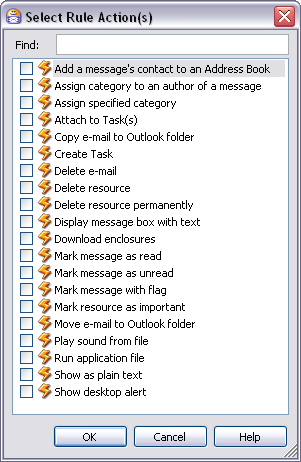

Select Rule Actions Dialog
You can access this dialog from the New/Edit Rule dialog: Actions field: Add button
The Rule Action(s) dialog enables you to select one or more actions for a Rule to implement when its Conditions and Exceptions are satisfied.
Note that not all the Actions documented in this topic are present in the dialog at all times. Some are dependent on the product version you have, and some may not be applicable depending on the rule Conditions and Exceptions.
The Select Rule Actions dialog (Omea Pro version shown)
Actions
Though majority of actions are self-explanatory, some of them may require additional comments.
| Action | Comments |
|---|---|
| Add a messages’ contact to an Address Book | This action adds a contact of the contact of the message you have currently selected to the Address Book which you specify in the Select Address Book dialog |
| Assign category to an author of a message | This action calls the Select Category dialog in which you can select the desired Category when the applicable criteria are met |
| Assign specified category | When applicable criteria are met, this action files the found resource(s) in the Category(ies) you specify after selecting this action in the dialog |
| Attach to Task(s) | When applicable criteria are met, this action attaches the found resource(s) to the Task(s) you specify after selecting this action in the dialog |
| Copy e-mail to Outlook folder | When applicable criteria are met, this action copies the incoming e-mails will be moved to the Outlook folder which you specify in the Select Outlook Folder dialog |
| Create Task | When applicable criteria are met, this action creates a new Task with the parameters that you specify |
| Delete e-mail | When applicable criteria are met, this action deletes one or more e-mail messages. |
| Delete resource | When applicable criteria are met, the resource is deleted to the Deleted Resources folder of the View and Categories pane |
| Delete resource permanently | When applicable criteria are met, the resource is deleted from your system |
| Display message box with text | When applicable criteria are met, this action pops up a message box displaying the texts you specify after selecting this action in the dialog |
| Download enclosures | When applicable criteria are met, this action initiates the download of enclosures in the specified feed |
| Mark resource as read | This action marks any message found by applicable criteria as read |
| Mark resource as unread | This action marks any message found by applicable criteria as unread |
| Mark resource with flag | When applicable criteria are met, this action marks the found message(s) with a flag which you specify after selecting this action in the dialog |
| Mark resource as important | When applicable criteria are met, this marks the received e-mail messages or other resource types as important (puts an exclamation note for the appropriate resource in the resource list) |
| Move e-mail to Outlook folder | When applicable criteria are met, this action moves the found e-mail messages to the Outlook folder you specify after selecting this action in the dialog. |
| Play sound from file | When applicable criteria are met, this action plays a sound file which you specify. |
| Run application file | When applicable criteria are met, this action runs the application executable file you specify after selecting this action in the dialog. |
| Show as plain text | When applicable criteria are met, this action strips any HTML or other markup from a resource as displays its content as plain text. |
| Show desktop alert | This action briefly pops up an alert box from the Windows task bar when the applicable criteria are met. |